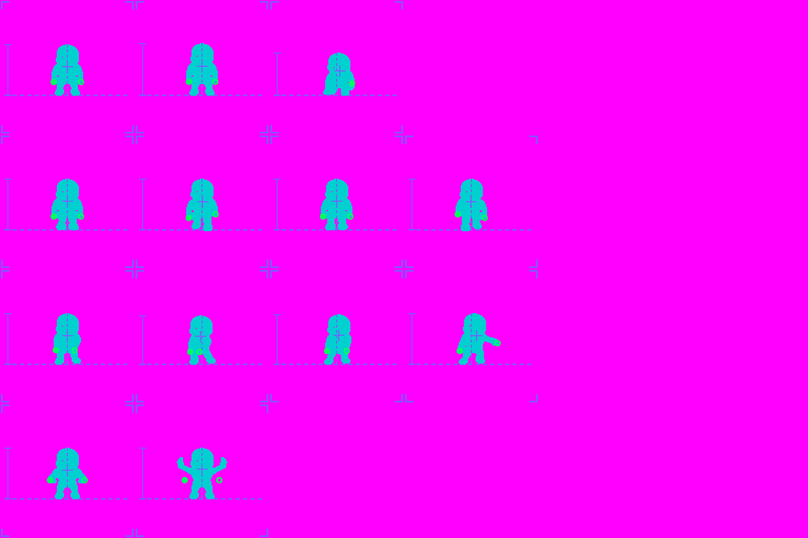
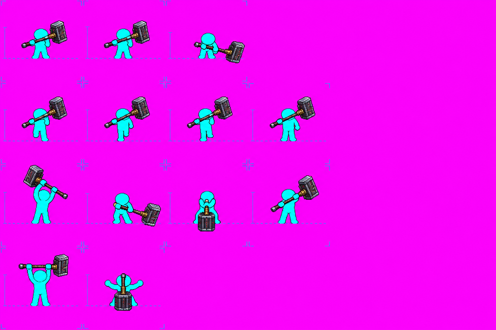
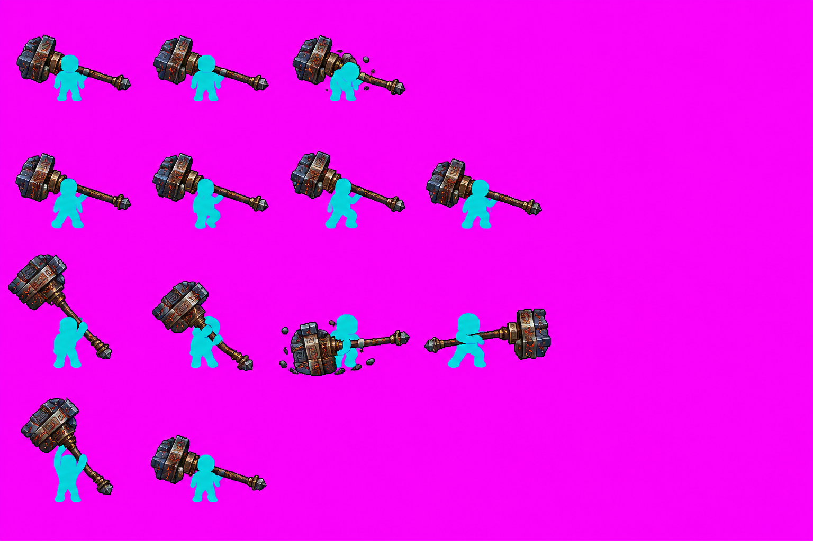

Hạo Thiên Chùy
Thí điểm vũ khí cứng · hai tay · khung 128 · Part of #1312, epic #1020
Thử mới: vũ khí riêng + ghép điểm cầm hướng nam · Nguồn, số lượt và kết quả kiểm · PR #1320
Xem khung RAW
Ô RAW 256 px, phóng 2 lần. Dùng để quan sát tư thế; chưa xóa nộm, marker hoặc tách lớp.
Năm tờ RAW
Đối chiếu lượt A
Lượt 1 chặn lưới (5 dải / cần 4); lượt 2: 10 cảnh báo; lượt 3: 7 cảnh báo, được giữ làm ứng viên ít lỗi nhất nhưng vẫn chưa đạt bằng mắt.

Nộm đầu vào: giữ nguyên hình bóng, tay, vạch và điểm cầm.
A lượt 1 — chưa đạt.
A lượt 2 — chưa đạt.